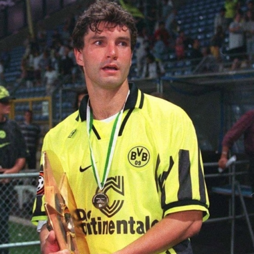
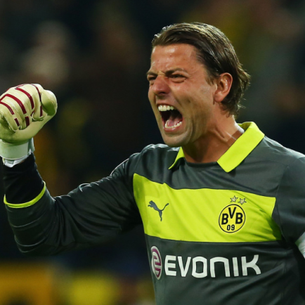
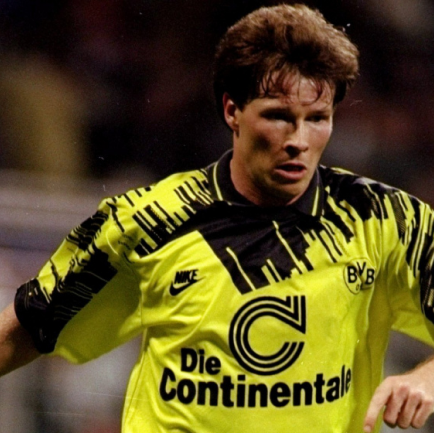
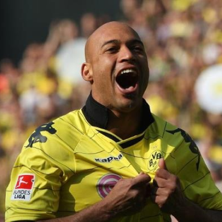

Borussia Dortmund
Ballspielverein Borussia 09 e. V. Dortmund, mais conhecido como Borussia Dortmund ou BVB, é um clube de futebol situado na Alemanha, mais precisamente no Vale do Ruhr, maior região industrial do país. Fundado em 19 de Dezembro de 1909 (110 anos) por um grupo de 18 jovens jogadores de futebol de Dortmund, que estavam descontentes com o tratamento do pároco local ao seu time de futebol -Trinity Youth- patrocinado pela Igreja Católica.
Títulos
Champions League: 1
Campeonato Alemão: 8
Copa da Alemanha: 5
Mundial: 1
Ídolos
- 
- 
- 
- 
Michael Zorc
Somando os anos dentro da categoria de base com o tempo enquanto profissional dentro do Borussia Dortmund, Zorc tem 20 anos de presença dentro do clube jogando. Após sua aposentadoria, em 1998, ele assumiu a função de diretor esportivo do time, que inclusive exerce até hoje. É idolatrado pela carreira sólida dentro e fora de campo, é recordista em atuações, com 581 jogos, e ocupa a vice-artilharia de todos os tempos dentro do Borussia, com 161 gols marcados.
Roman Weidenfeller
Um dos ídolos da história recente do time, o goleiro Roman Weidenfeller está entre os maiores jogadores do Borussia Dortmund na história. O alemão chegou em 2002, vindo do Kaiserslautern, já sendo campeão nacional em sua primeira temporada. Desde então, apesar de uma lesão no menisco sofrida em 2005, Weidenfeller se tornou titular absoluto debaixo das traves, e com grandes atuações, caiu nas graças da torcida.
Stefan Reuter
O experiente zagueiro chegou ao clube aurinegro em 1992, após passagens por Nürnberg, Bayern de Munique e Juventus, se firmou no time titular e foi um dos pilares da equipe campeã Europeia. Além dos títulos nacionais que fortaleceram a história do Borussia Dortmund durante os 12 anos em que Reuter vestiu a camisa do time alemão. O defensor alemão é o terceiro que mais esteve em campo na história da equipe, com 421 jogos.
Dedê
Um brasileiro está entre os maiores jogadores do Borussia Dortmund na história. A conexão entre o lateral-esquerdo revelado pelo Atlético-MG e o time alemão é algo fora de série.
Signal Iduna Park
O Signal Iduna Park (Westfalenstadion (pronúncia em alemão: [vɛstˈfaːlnˌʃtaːdi̯ɔn]) até dezembro de 2005) é um estádio de futebol localizado na cidade de Dortmund, na Alemanha. Tem a capacidade para 81.365 espectadores, 65.718 sentados. É o estádio com maior capacidade de público do país. Em 1966, o Borussia Dortmund conquistou a Recopa Europeia, surgindo assim o desejo de ampliar o antigo estádio, o "Rote Erde Stadion" ("Estádio da Terra Vermelha"), mas a falta de dinheiro impediu o sonho.